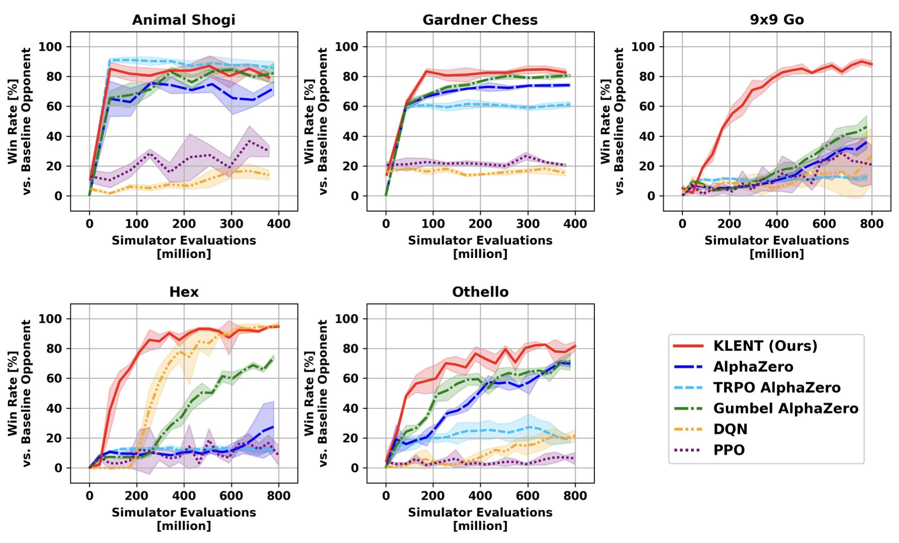

ICML 2026 Main Conference Paper
Jul 8, 2:30 PM-4:15 PM, Hall A #306

We revisit regularized policy optimization for two-player games and develop KLENT, a search-free self-play reinforcement learning method that improves training stability and efficiency.
project page | paper | poster | event page on web | event page on mobile